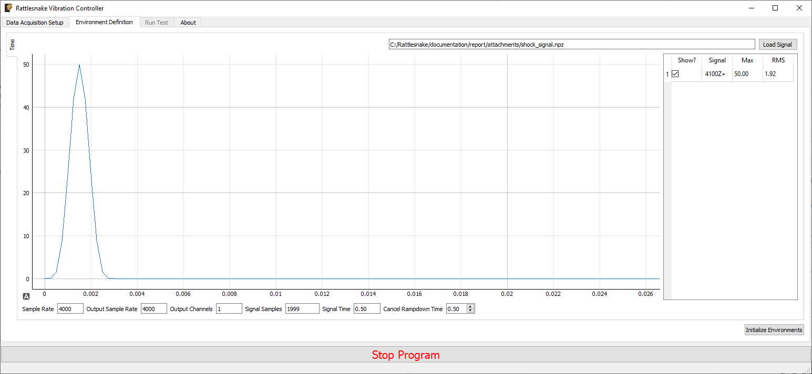
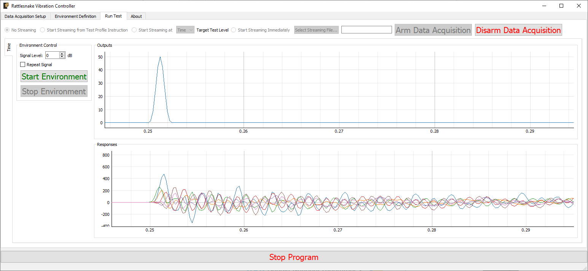

14. Time History Generator
Rattlesnake's Time History Generator environment provides the ability to simply stream a user-created signal to an output device. While this is a relatively simple environment, it can be used to create simple shocks or run open-loop excitation devices such as a centrifuge with voltage input being proportional to speed. There is no system identification, and therefore no test predictions that are made for this environment.
14.1. Signal Definition
The first step to defining a Time History Generator environment is to create the signal that will be output. Rattlesnake accepts the signal in the form of a 2D array consisting of an output sample for each excitation signal for each time step. Signals can be loaded from Numpy *.npy or *.npz files or Matlab *.mat files. For *.npy files, the stored array defines the signal directly, and it is assumed that the signal uses the sample rate specified in Rattlesnake. Note that if a hardware device over-samples the output (e.g. LAN-XI, see Section 5 LAN-XI Devices), it is the over-sampled output sample rate that is used rather than the acquisition sample rate. Matlab *.mat and Numpy *.npz files allow the users to specify a time vector as well as a signal, and should contain the following data members:
- signal: A array containing the signal for each exciter for each time step in
t. - t: A array of times corresponding to the samples in the
signalmatrix.
where is the number of exciters and is the number of samples in the signal. If the time vector specified by t does not match the sample rate specified in Rattlesnake, the signal data will be linearly interpolated to provide the correct sample rate. If t is not provided in the *.mat or *.npz file, Rattlesnake will treat signal as if it were defined at the output sample rate of the controller.
The ordering of the signals in the signal file is the same as the ordering of the excitation devices in the channel table that are active in the current environment. The first signal will be played to the first excitation device, and so on.
Note that the environment will play the signal as-is, so it is up to the user to implement graceful startup and shutdown at the start and end of the signal if the test configuration requires it.
14.2. Defining the Time History Generator Environment in Rattlesnake
In addition to the signal that will be played to the excitation devices, there is only one parameter that needs to be defined in the Time History Generator. Figure 14.1 shows a Time History Generator sub-tab in the Environment Definition tab of Rattlesnake.

Figure 14-1. GUI defining the Time History Generation environment
Pressing the Load Signal button brings up a file dialog from which the signal file can be loaded. Once the file is loaded, it is displayed in the main plot window. Signal statistics are also displayed in the adjacent table. The checkbox in the Show? column of the table can be used to show or hide individual signals. The signal name in the Signal column is constructed from the node number and direction in the channel table. The Max and RMS value of the signal is also displayed.
At the bottom of the window, there are various computed parameters, and one user defined parameter.
- Sample Rate: The global sample rate of the data acquisition system. This is set on the
Data Acquisition Setuptab, and displayed here for convenience as a read-only value. - Output Sample Rate: This is the output sample rate, which might be different than
Sample Rateif the hardware over-samples the output device. This is set on theData Acquisition Setuptab, and displayed here for convenience as a read-only value. - Output Channels: The number of excitation signals being used by this environment. This is a computed quantity presented for convenience, so the user cannot modify it directly.
- Signal Samples: The number of samples in the loaded signal. This is a computed quantity presented for convenience, so the use cannot modify it directly.
- Signal Time: The amount of time it will take to play the signal. This is a computed quantity presented for convenience, so the user cannot modify it directly.
- Cancel Rampdown Time: The amount of time the environment will take to ramp to zero if the environment is stopped prior to the signal being completely played.
14.3. Running the Time History Generator Environment
The Time History Generator environment is then run on the Run Test tab of the controller. With the data acquisition system armed, the GUI looks like Figure 14.2.

Figure 14-2. GUI for running the Time History Generator Environment
Two parameters can be defined prior to starting the environment.
- Signal Level: Allows the user to scale the signal prior to output by a number of dB.
- Repeat Signal: Checking this checkbox makes the signal repeat once started until the environment is stopped manually. Alternatively, the environment will stop automatically once the signal has been played.
Similar to other environments, there are Start Environment and Stop Environment buttons to control when the environment occurs. If the Stop Environment button is clicked, the signal will continue to play for the specified Cancel Rampdown Time while the environment ramps the signal level to zero.
14.4. Output NetCDF File Structure
When Rattlesnake saves data to a netCDF file, environment-specific parameters are stored in a netCDF group with the same name as the environment name. Similar to the root netCDF structure described in Section 3.8 Rattlesnake Output Files, this group will have its own attributes, dimensions, and variables, which are described here.
14.4.2. NetCDF Dimensions
- output_channels: The number of output signals used by the environment
- signal_samples: The number of samples in the output signals
14.4.2. NetCDF Attributes
- cancel_rampdown_time: The time to ramp to zero if the environment is stopped.
14.4.3. NetCDF Variables
- output_signal: The signals that are played to the excitation devices Type: 64-bit float; Dimensions:
output_channelssignal_samples